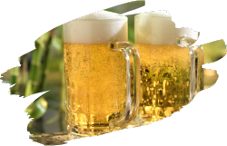
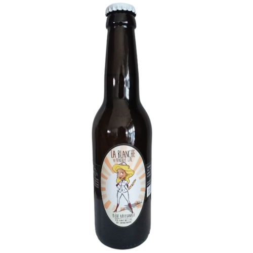
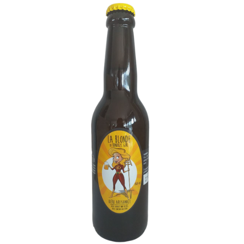
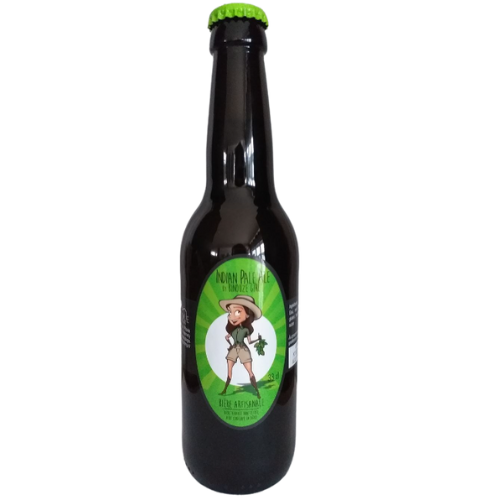
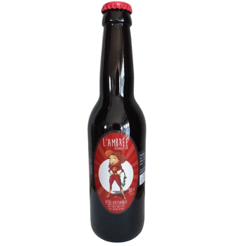
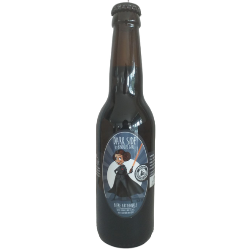
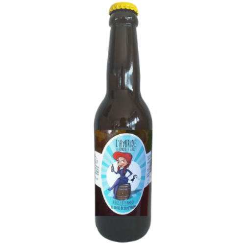

Nos bières by Binouze Girl
Pour découvrir nos bières, leur composition, leur degré d'alcool ou comment les accorder, c'est par ici !

La blanche
Composition :
eau, malt d'orge et de blé, pain, houblons, sucre, levuresDegré d'alcool :
4,5 %Nez :
arômes exotiques évoluant sur le lychee avec des notes épicéesDégustation :
attaque fraîche et dynamique marquée par les agrumesAccords possibles :
apéritif, cuisine asiatique, sushis,...

La blonde
Composition :
eau, malt d'orge et de blé, houblons, sucre, levuresDegré d'alcool :
5,8 %Nez :
nez de malt et de levure évoluant sur des notes floralesDégustation :
notes de fruits et plus particulièrement de pommes à cidreAccords possibles :
apéritif, volailles crémées, plateau de fromages,...

L'IPA
Composition :
eau, malt d'orge, houblons, levures, sucreDegré d'alcool :
6,5 %Nez :
senteurs d'agrumes particulièrement marquées par l'écorce de pamplemousse rose et l'amande fraiche.Dégustation :
attaque franche, évoluant sur une belle amertume marquée par les agrumesAccords possibles :
tartare de poissons, crustacés, plateau de fromages affinés,...

L'ambrée
Composition :
eau, malt d'orge, houblons, levures, sucreDegré d'alcool :
5,5 %Nez :
Le nez est tout d'abord épicé, avec des notes de clou de girofle, on trouve dans un second temps des notes de caramel beurre saléDégustation :
attaque franche sur l'amertume évoluant sur la réglisseAccords possibles :
canard aux épices, filet mignon rôti au miel, charcuteries fumées,...

La dark side
Composition :
eau, malt d'orge, houblons, eau de vie de marc du domaine de la Laidière, levures, sucreDegré d'alcool :
6 %Nez :
nez caractérisé par des arômes de café et de cacao torréfiésDégustation :
attaque souple, amertume légère, notes de réglisse et de zanAccords possibles :
charcuteries, rognons de veau, plat de gibiers, foie gras aux épices,...

L'hybride
Au gré des envies de Binouze Girl, à découvrir !